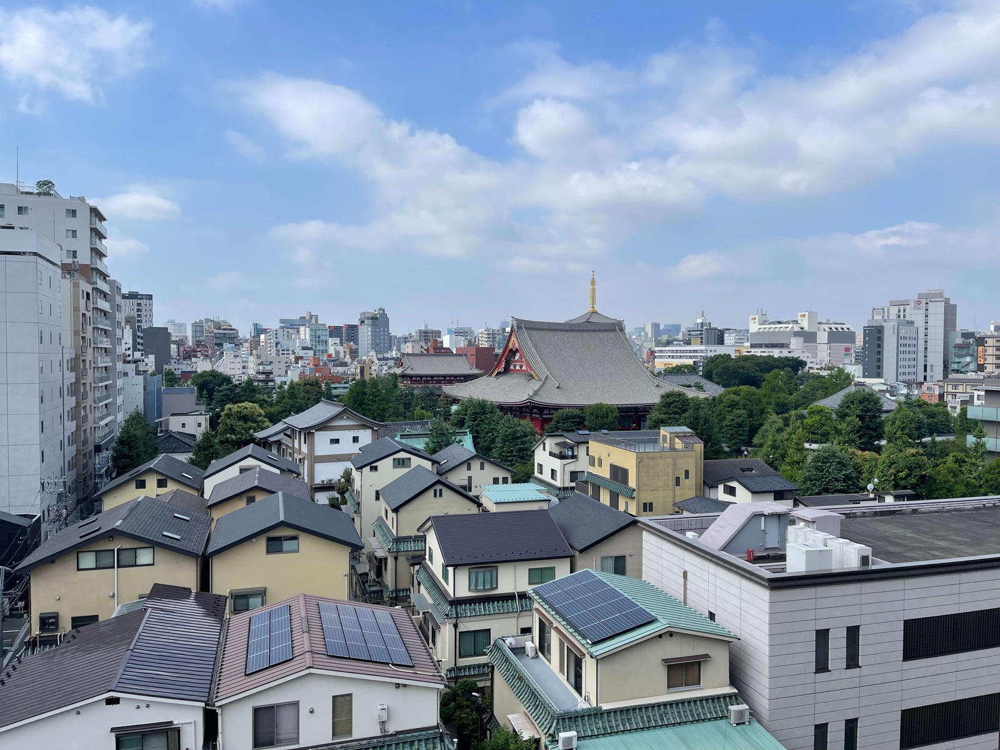
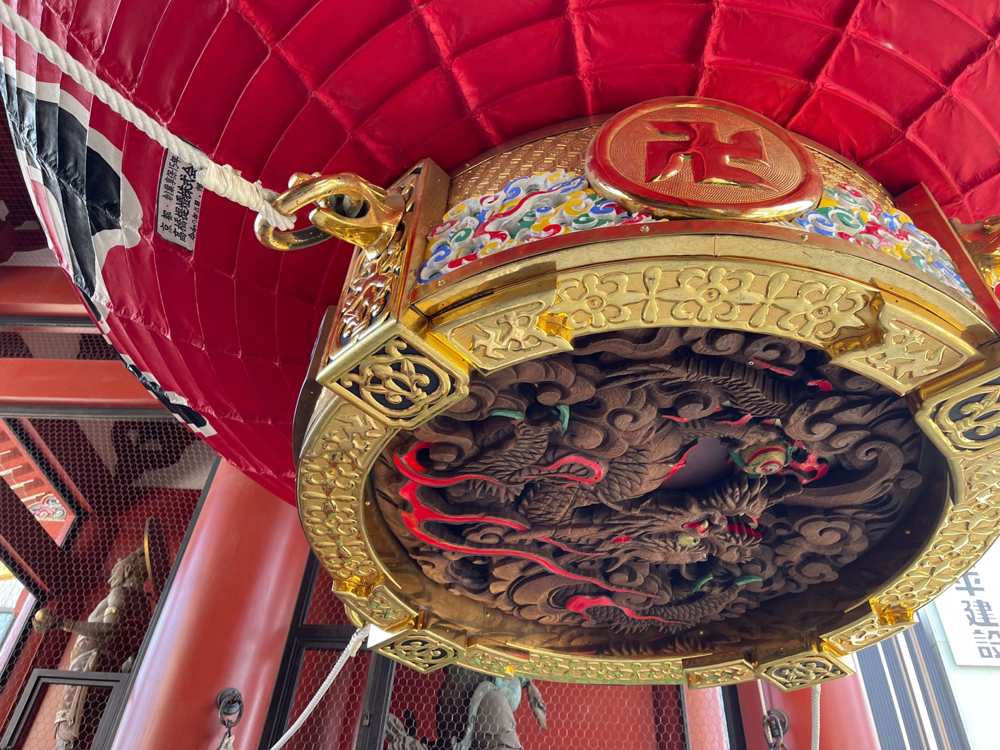
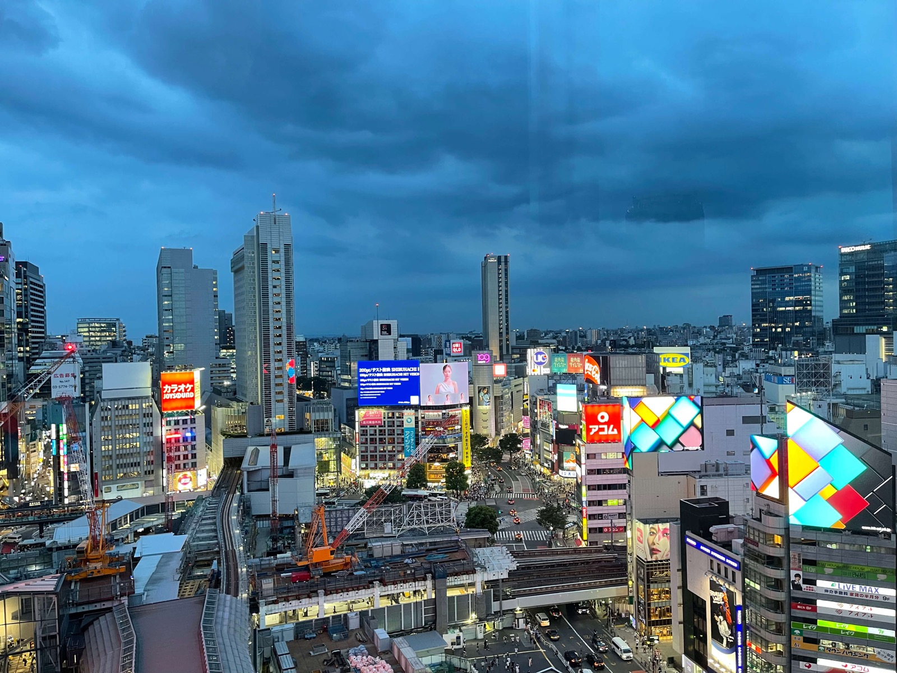
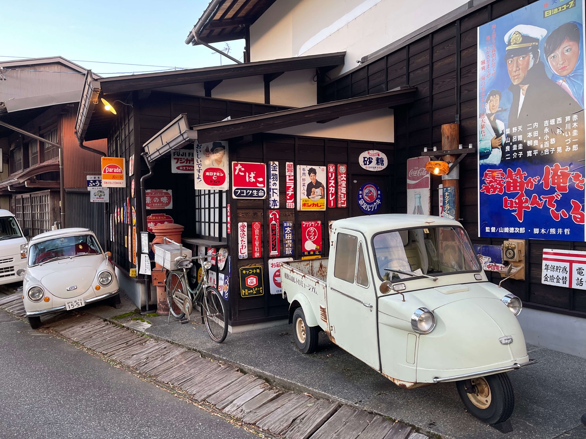
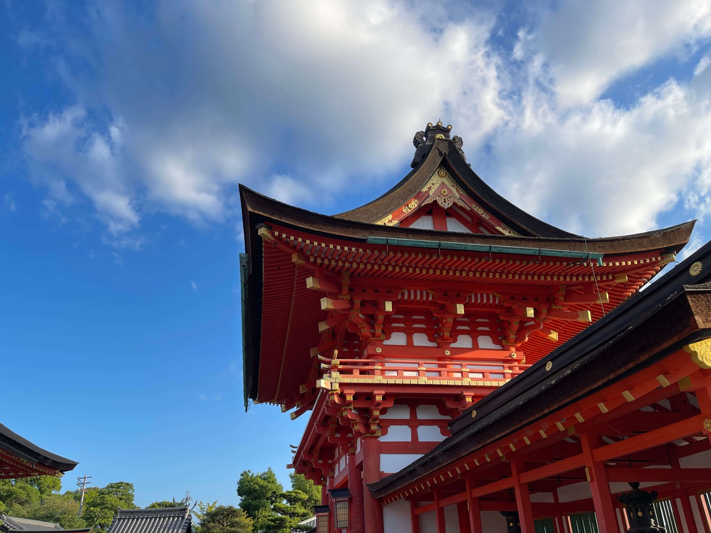
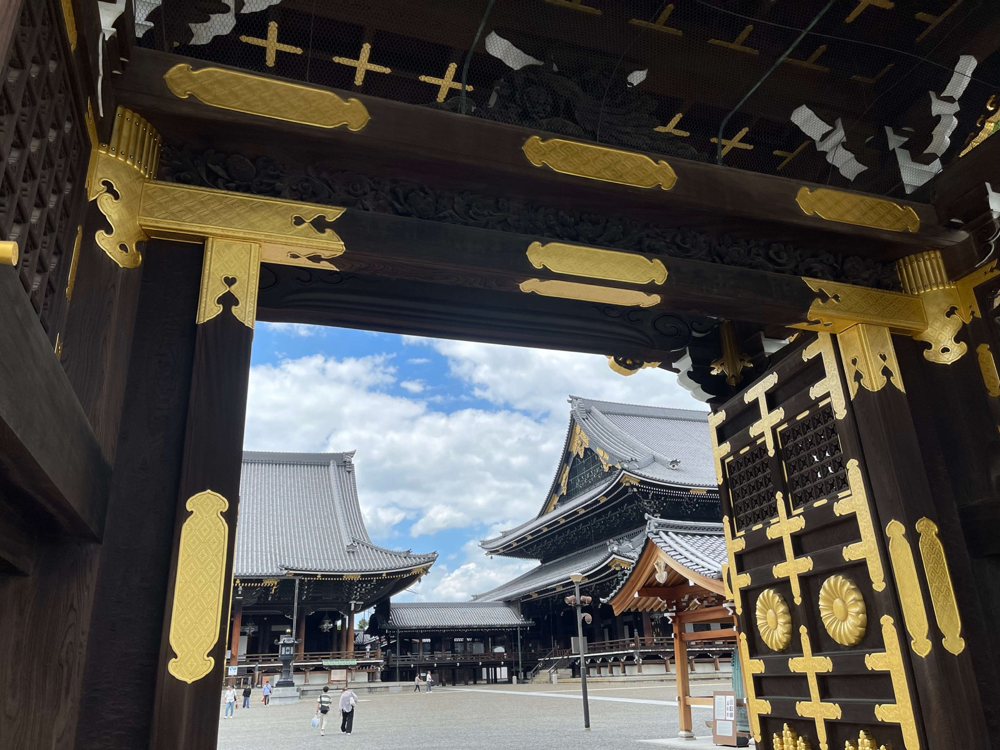
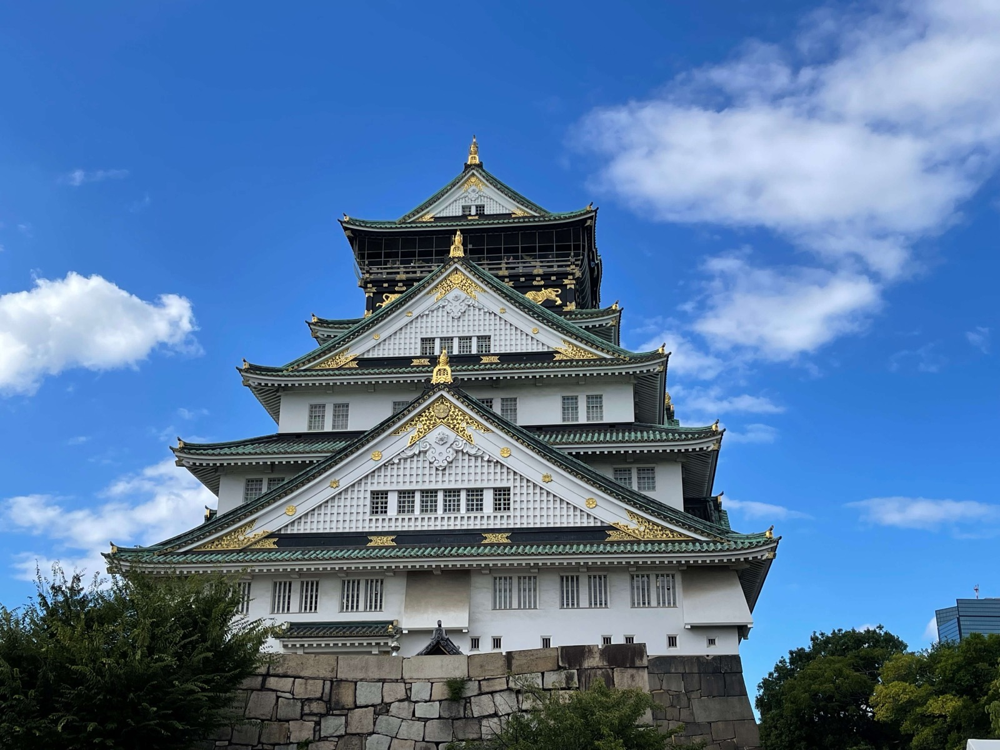

Itinerario Japón Exprés – 7 días de viaje
Este itinerario está pensado para una primera visita a Japón, combinando grandes ciudades, zonas tradicionales y gastronomía local en solo una semana.
-
 Día 1 – Llegada a Tokio y primera toma de contacto
Aterrizaje en la ciudad, traslado al alojamiento y paseo ligero por los alrededores para adaptarse al cambio horario y empezar a tomarle el pulso a Tokio.
-
 Día 2 – Tokio tradicional: Asakusa, Palacio Imperial y Torre de Tokio
Un recorrido que combina templos, jardines imperiales y uno de los miradores más emblemáticos de la ciudad para disfrutar de Tokio desde las alturas.
-
 Día 3 – Tokio moderno: Shibuya y Shinjuku
Cruce de Shibuya, neones, rascacielos y miradores para ver la ciudad de noche desde lo alto de algunos de sus edificios más conocidos.
-
 Día 4 – Takayama: pueblo tradicional en los Alpes japoneses
Calles históricas, casas de madera y un ambiente mucho más pausado en un pueblo rodeado de montaña.
-
 Día 5 – Kioto: templos y barrio de Gion
Primera toma de contacto con algunos de los templos más representativos y las callejuelas tradicionales del barrio de Gion.
-
 Día 6 – Kioto: Fushimi Inari y Arashiyama
Una jornada rodeada de naturaleza, santuarios y bosques de bambú en los alrededores de Kioto.
-
 Día 7 – Osaka: Castillo, comida callejera y neones de Dotonbori
Historia samurái, platos típicos como el takoyaki y una despedida rodeada de luces y carteles luminosos en una de las zonas más animadas de la ciudad.